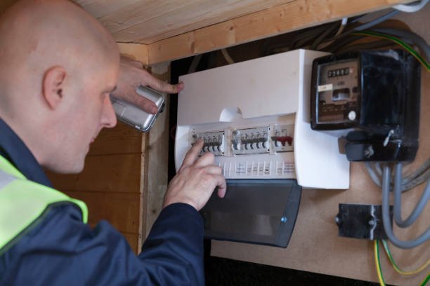
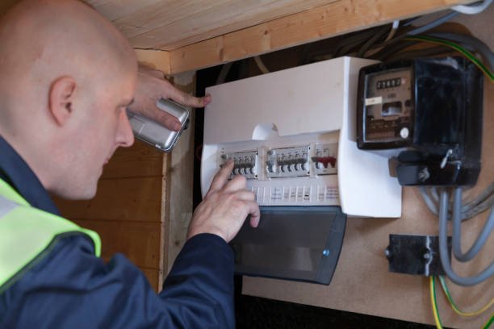

EICR Electrical Safety Reports
We offer Electrical Installation Condition Reports (EICRs) for landlords, homeowners, and businesses across Bradford, Leeds, Halifax, and nearby areas. All work carried out by fully qualified, NAPIT-certified electricians.
- ✅ Full EICR testing with C1/C2/C3 classification
- üìÑ Digital PDF certificate issued in 24‚Äì48 hours
- üõ† Remedial repairs available if needed
- üè† Suitable for rental properties, HMOs, and homes
 

What Do We Test?
We check the safety of all accessible wiring, sockets, lighting circuits, fuse boards (consumer units), earthing and bonding, and test for faults that could lead to electric shock or fire.
Will the Power Be Off?
Yes – we’ll need to temporarily turn off the power in short phases to perform live testing. We'll give you advance notice and keep any disruption minimal. Most 2–3 bed homes take 2–3 hours to inspect fully.
What Happens After?
If your system is safe, we’ll issue a digital certificate usually the same day or within 24–48 hours. If issues are found, they’ll be flagged with C1, C2 or C3 codes and explained clearly in your report.
Remedial Work
We offer quick and cost-effective fixes for any issues found during the inspection. You’ll get a full quote and can usually book the repairs straight away — no pressure, no hidden costs.
Why Choose A & J Electricians?
- ✅ Over 15 years of experience in electrical testing
- ✅ Fully insured and NAPIT registered
- ✅ Trusted by landlords and letting agents